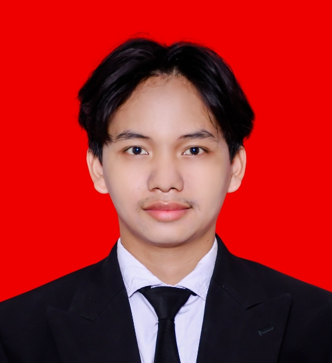
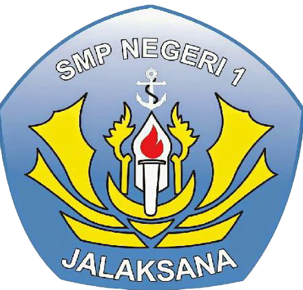

Personal Introduction

I am an individual with a strong interest in personal development, professionalism, and continuous achievement. I believe that the combination of discipline, creativity, and consistency is the key to producing high-quality work. In every role I take on, I always strive to deliver my best contribution. I am accustomed to working with high standards and taking full responsibility for my results. For me, the learning process never stops and is an essential part of my career journey.
My educational background and professional experiences have shaped an analytical and structured way of thinking. I am comfortable facing challenges with a logical yet flexible approach. Adaptability has become one of my core strengths in dynamic work environments. I am able to work independently as well as collaboratively within a team through effective communication. Every experience I gain is treated as an opportunity for further growth.
Through my experiences, I have developed a strong sense of responsibility and attention to detail in everything I do. I understand the importance of accuracy, reliability, and integrity in achieving sustainable results. I consistently aim to manage tasks efficiently, prioritize effectively, and meet deadlines without compromising quality. This mindset allows me to contribute positively in both individual assignments and team-based projects.
I am also highly motivated to continuously improve my skills and expand my knowledge, particularly in areas that support professional growth and organizational objectives. I actively seek feedback as a tool for self-improvement and view challenges as valuable learning opportunities. By maintaining an open mindset, I am able to adapt to new systems, processes, and expectations with confidence.
Ultimately, I aspire to be a professional who adds value through meaningful contributions, strong work ethics, and a commitment to excellence. I am eager to grow alongside an organization that values development, collaboration, and long-term impact. With a balanced combination of analytical thinking, adaptability, and dedication, I am ready to take on responsibilities and grow into greater roles in the future.
Pandeyan, Kec. Umbulharjo,
Kota Yogyakarta, Daerah Istimewa Yogyakarta 55161 https://ucy.ac.id/
Padamenak, Kec. Jalaksana,
Kabupaten Kuningan, Jawa Barat 45554 https://sman1-jalaksana.sch.id/

Padamenak, Kec. Jalaksana,
Kabupaten Kuningan, Jawa Barat 45554 https://www.smpn1jalaksana.sch.id/?m=1
Kalapagunung, Kec. Kramatmulya,
Kabupaten Kuningan, Jawa Barat 45553 https://eventkampus.com/sekolah/mis-lkmd-kalapagunung__30226